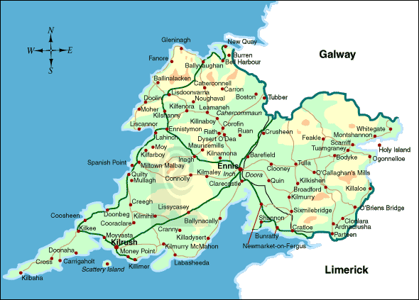

THE
LANE FAMILY.
From
Shravokee
County
Clare – Ireland

WE
ARE VERY FORTUNATE THAT WE CAN TRACE OUR LANE FAMILY BACK TO A TOWNLAND IN
COUNTY CLARE WHERE DESCENDANTS OF OUR FAMILY STILL FARM.
WE HAVE BEEN ABLE TO DISCOVER MANY OF THE EARLY LANES WHO EMIGRATED TO VICTORIA
IN THE 1800'S AND BY DEATH CERTIFICATES, OBITUARIES AND FAMILY HISTORY ETC. WE
CAN TRACK THE FAMILY BACK TO A SMALL TOWNLAND CALLED "SHRAVOKEE" IN COUNTY
CLARE, IRELAND A FEW km's FROM THE LIMERICK BORDER.
Ireland has suffered many
catastrophes and severe hardships in its time including the invasion by Oliver
Cromwell and its effects as well as a number of severe famines.
Oliver Cromwell landed in Ireland from
England in 1649 with his New Model Army and savaged the Catholics and Royalists.
Under brutal punitive terms of surrender mass confiscation of all Irish
Catholic owned land occurred. In addition many thousands of the population were
sent to The West Indies or New England in America as indentured servants or
slaves.
Cromwell's army would have passed
what were the Lane farms some 150 years later.
These confiscated lands in Ireland
were in part distributed to some 12000 soldiers and adventurers as they had not
been paid for some eighteen months and England was unable to pay their wages.
This huge turmoil resulted in the Irish Landowners and their tenants being
banished or transplanted to the province of Connacht and County Clare. They had
to transplant themselves, their families, dependents, livestock and goods before
the 1st May, 1654. The penalty for not transplanting was death by hanging.
No event in Irish history had a more
emotional effect on Irish national feeling than
the Great Famine of 1845-1849.
The continual disastrous failure of the potato
crop, due to a killer tuber-rotting fungus Phytophthora Infestans ,
known as the Potato Blight , had by February,
1846 struck every county in Ireland and destroyed
three-quarters of the country's crop.
Conditions in Ireland up until that time were
poor and travellers often commented on the extreme
misery of the poorest Irish peasant. He lived off
a tiny piece of land for which he paid such a
high rent that almost all, and sometimes all, the
cereal crops he grew on it had to be sold to pay
the rent, with the result that the farmer and his
family subsisted on a plot of potatoes which
became the staple diet for the people of Ireland.
This situation had become increasingly
precarious during the first four decades of the
nineteenth century, which had seen a vast
population explosion in Ireland. The population
of Ireland in 1800 was estimated at 4.5 million
however this had increased to 8 million by 1841.
The pressure of this vast increase of people
on the land became a serious problem as land
became subdivided into smaller and smaller plots
on which increasingly people subsisted mainly on
potatoes.
The crop failed due to the disease for four
successive years.
Deaths from starvation in Ireland during
the Famine years 1845-1849 have been estimated at
approximately one million people. These were mostly peasant
farmers and their families, who starved to death..
In 1846, the rate of ‘famine’ burials in East Clare from the infamous
workhouse at Scariff, not all that far from Shravokee, was so great, that the existing graveyards were filled to
capacity.
A contemporary account published in the Limerick Chronicle of
January 6th 1847, tells its own story.
‘The Workhouse at Scariff County Clare is so overcrowded
with paupers, that a disease almost amounting to a plague has
broken out amongst its inmates – the deaths averaging from four
to twelve daily. It is horrifying to behold a donkey cart laden
with five and six bodies piled over each other, going to be
interred, and not a person attending the wretched cortege except
the driver. The graves are so dug that the coffins are barely
covered with earth, rendering the air infected. No coroner’s
inquests have been held.’The Great
Famine rocked Clare society to its foundations. In 1841, almost
25,000 Clare families lived in one-room mud cabins with
inadequate ventilation and scant protection from the elements.
This accounted for sixty percent of all registered houses in
Clare. These homes were to become the primary victims of the
famine tragedy, as hunger, disease, and emigration coincided to
rid the area of entire communities. In the grim decade
1841-1851, the population of Clare fell by twenty-five percent.
In all, about thirteen thousand Clare homes became uninhabited
during the famine decade. The anguish of Clare's famine victims
is graphically described in a plea sent on their behalf to the
Assistant Secretary to the Treasury, Charles Trevelyan, and the
Board of Works in Dublin by a Captain Wynne in December 1846:
Although a man not easily moved, I
confess myself unmanned by the intensity and extent of the
suffering I witnessed more especially among the women and
little children, crowds of whom were to be seen scattered
over the turnip fields like a flock of banished crows,
devouring the raw turnips, mothers half-naked, shivering in
the snow and sleet, muttering exclamations of despair, while
their children were screaming with hunger.
At Ennis, also in County Clare, during the Famine period
Marcus Keane was a notorious Land Agent who acted with untold
brutality on behalf of Landlords and specialised in clearing the
land of tenants. The Landlords realised there was more money to
be made out of raising cattle for export than in keeping
starving tenant farmers, Keane had control of some 60000
acres and levelled as many as 500 homes on behalf of his
clients.
From 1847 to 1850 more than 14000 people (2700 families) were
evicted in the Kilrush Union alone.
Evicted tenants had few options, the prospect of being admitted
to the workhouse was tantamount to a slow death, with cholera,
malnutrition and family brake up part of the destitute package.
Many chose to brave the elements by making temporary shelters
in bog holes, behind stone walls, or in ditches using the
remnants of their homes as makeshift shelters.
In County Galway, it was reported that there
were dead bodies everywhere and that every
village had bodies lying unburied for many days.
The streets were daily thronged with moving
skeletons and the fields were strewn with the
dead. Food riots were occurring in every County
due to the population starving. Typhus was soon
raging throughout Ireland resulting in many
deaths.
In the period 1846 to 1847 people died in their hundreds of thousands of
starvation and fever - one quarter of the population of Ireland died in those two years.
One sad fact is that Ireland produced enough corn in those two years to feed the
whole country but it was all exported by the English landholders whilst
the peasantry were dying of hunger.
The conditions in the area around Clonlara and Shravokee were no better.
It was in this context that mass emigration
occurred with people leaving from every port in
Ireland. In 1847, some 250,000 people left
Ireland and the rate was to continue at that
level and sometimes higher for the next four
years. Many of them travelled to the United States, Canada and
also Australia where they were to profoundly influence the
societies into which they were absorbed.
The circumstances of the Lane Family before and during the
famine period are not known.
Irish farmers basically were not permitted to own land and operated as
tenant farmers paying rent to landowners which in the main were English who
were rewarded lands by Cromwell.
The various Lane Families from 1824 appear to have had more than reasonable holdings
enabling them to survive.
In addition they were Tenant Farmers to the Barrington Family who had the
Annaghbeg
Estate which was a very large farming area.
Sir Matthew Barrington, 1788 - 1861 was by all accounts an
excellent landlord to his Catholic Tenants, not at all common in Ireland at
that time.
During the Great Famine, he gave his tenants a reduction in their rents and
in many cases did not exact any payments.
This perhaps resulted in loyalty from his tenant farmers as the Doonass
Catholic Parish Registers noted that in 1853 a substantial number of tenants
on the Estate voted for Colonel Vandeleur, a noted Torey who was against Home
Rule for the Irish, in a controversial election for County Clare..
These included from Shrankee (Shravokee)
Michael Moloney,
Tom Lane,
Tommy Lane,
James Lane,
James McCormack,
Patt Mulqueeny
as well as
John Madden, Michael McCormack and Daniel Madden from Gurrane who were
neighbors..
This would have been a big decision for these tenant farmers to make as at the
time in County Clare the Catholic Clergy were becoming extremely active in local
political affairs.
Many Landlords believed they had the right to tell their tenants how to vote.
In addition many tenant farmers were caught in the middle between the Church and
their landlord but in a lot of cases had to vote in accordance with the
landlords wishes or face eviction.
Some tenants were of the opinion they must obey their landlord when they have a
good landlord, as a mark of respect.
By making a note in the Church Registry clearly the Parish Priest in this case
was not happy.
The following web site gives a brief history on the Barrington family.
http://www.limerickcity.ie/media/barringtons%20and%20their%20tenants.pdf
Thomas Lane (s) Were Tenant Farmers with reasonable holdings of 1st and 2nd Grade Land near the
River Shannon as shown in the Tithe Applotment Books of 1824. These were farmed
in a partnership arrangement where families or friends pooled their resources to
achieve economy of scale.
The 1841 census revealed that 88%of farms in County
Clare were between one and fifteen acres. It was estimated 80,000 families in
Clare held an average of four acres.
Indications were that the critical farm threshold for an income above
subsistence level was 20 acres, which was the reason many where possible pooled
their resources to form a partnership.
This period was the lead up to the Great Famine and small farms, large families
and the potato as a staple food had a huge affect.
The 1841 Census reveals the Barony of Tully Lower, which included the area where
Shravokee is located, had a total of 5032 houses of which 38% were one room
thatched roof houses.
We know from the obituary of Michael Lane,
of Koroit in Victoria in 1912, that his father, Thomas
Lane b1818,
wanted to settle him on a farm prior to him coming in 1861 to Australia, but he came to Australia instead,
leaving us to think the family they were in reasonable circumstances.
One would think that the obituary would be correct as most of Michael Lane's
neighbors and friends originated from the same area in County Clare.
The Lane family came
from the town land of Shravokee near Clonlara, County Clare in the south west of Ireland, a few
miles north of Limerick City overlooking the
River Shannon. Clonlara was once known as
Doonas and many places in the village and
surrounds, including the Falls of Doonas on the
River Shannon between Limerick and Killaloe, are
still called by this name.
Doonas or Dun Ease means the Fort of the
Rapids. In 1841, the population of the rural
districts was 4016 with 629 houses.
Various newspaper obituaries of the early Lane
families in Australia confirm they came from
Shravokee in the Parish of Doonas in County Clare.
The English ruled Ireland in those days and had a
number of unusual terminology’s relating to
the areas of the country and of course, many of
the people used the old Catholic Church
Terminology.
We are fortunate in that three gravestones survive in a very small cemetery "Teampall
Mochulla", which is a matter of a few hundred meters from where the Lane Families farmed give some idea of the Family
History.
LANE.
There
is a headstone in the Lane Cemetery at Teampail near the 1855 Lane Farms
listed in the Griffiths Valuation.
It reads -:
ERECTED BY THOMAS, PATRICK & ANNE LANE
and their COUSIN
THOMAS LANE
in memory of
JAMES LANE
who departed this life
10th February 1855
aged 45 years
This headstone appears to link the Lanes who
held land in the Griffiths Valuation of 1855.
The property which James Lane held after probate passed to his wife Anne Lane
(Malone).
Margaret Lane & Mary Anne Lane who came to Australia and married the Gleeson
Brothers were Grandchildren.
It is believed this is the farm listed as
House 8
below in the 1901 Census for Srawickeen (Cappavilla, Clare).
The Thomas Lane's listed on the Headstone are believed to be Thomas Lane (Mulqueeney)
and Thomas Lane (Moloney) who both occupied farms Shravokee and Mt.
O'Donnell in the Griffiths Valuation of 1855.
The Patrick Lane listed is probably Pat Lane of Quinpool.
This headstone also explains the change in ownership of the farm of James Lane to Anne Lane in the two
Landed Estate Reports of 1851 and 1856.
LANE.
Erected by Patrick Lane in memory of his beloved wife Ellen Lane who died on
10/?/1878 aged 60 years.
LANE
This is a replacement tombstone)
In loving memory of Michael Lane b1788, His wife Catherine.
Thomas died 25 Aug. 1891, aged 73 yrs. His wife Elizabeth died 29 Nov. 1895, aged 75
yrs.
Thomas died 23 Oct., 1895, aged 56 yrs.
His wife Mary died Feb. 1923, aged 80 yrs.
Rev. James Lane (brother of Thomas), died 24
Jan. 1877, aged 31 yrs.
John died 27 Feb. 1934, aged 54 yrs. His wife Ellen died 12 Dec. 1978 aged 90 yrs.
John died 22 May, 1982, aged 55 yrs.
This headstone relates to our Michael Lane b1788 and
his wife Catherine.
It was erected by Father Tom Lane and Father
Michael Lane, who were the sons of John Lane d1934, with most of the detail taken off
old headstones.
- The town land is the smallest and
most ancient of the Irish land divisions. There
were 60,462 town lands in Ireland. Shravokee
and Mt. O'Donnell were the old local names for the official
town land of Srawickeen.
- The Civil Parish is in effect a
group of Town lands which in our case was
Kiltenanlea.
- The Roman Catholic Parish was Donnas.
Due to the imposition of the English System of
Local Government in the 16th Century,
Ireland had to adapt to a different Civil Parish
system centered on towns and villages. The local
people continued to use the Roman Catholic system.
- The Poor Law Union – Ireland
in 1838 was divided into unions or districts to
which the local rateable tenants were to be
financially responsible for the care of paupers
or poor people in their areas. These areas were
generally centred on a large market town. In
this case, the Poor Law Union was Limerick.
- Ireland was divided into four provinces and
Clonlara
was in the province of Munster.
Srawickeen at the time of The Griffiths Valuation consisted of
a little over 361 acres described as good arable, pasture and
meadow land, of which 30% was liable to flooding due to its
proximity to the River Shannon. Crops grown were potatoes, corn
and flax. The landlord was Daniel Barrington of Glenstal,
a clerk of the Crown at Limerick. He died in 1842. The land was
let at will to 11 groups of tenants in farm sizes from 10 to 38
acres, with rents charged at £1-16-0 per acre.
Population -:
1841 Males 59. Females 43.
No of Houses 11.
1851 Males 53 Females 54.
No of Houses 11.
The surnames of tenants occupying land included -: Moloney, Shaughnessy, Lane,
Malone, Callaghan, Mulqueeny, and McCormack.
It was noted that John Moloney had a small Osiery (willows used
in basket making) on his property.
.
The Tithe Applotment Books of 1824 list the holders of agricultural land in
Ireland who had to pay tithes to the Established Church of Ireland i.e. the
Protestant Church. It was a tithe resented by the Roman Catholics.
It is interesting to note that in the Tithe Applotment Books for the
Parish Of Kiltenanlea, which lists occupiers of land in the Parish as at October 24th, 1824 that a
Thomas Lane occupied land at
Fravoukee sharing with Roger Moloney and Daniel Shaughnessy.
There is also an entry for the almost the same landholders at Isleland which
may be a duplication.
For a list of landholders by Townland refer to Clare Library Web Site
-:
http://www.clarelibrary.ie/eolas/coclare/genealogy/tithe_applot/kiltenanlea_tab.htm
There is another entry
for a Thomas Lane occupying land at Mt. Donnell sharing with Pat and
John Mulqueeny.
The place names of Isleland and Mt. Donnell are old local place names which
were incorporated into the Townland of Srawickeen for the Griffiths
Valuation.
Mt. O'Donnell is situated within meters of Shravokee.
Shravokee appear to go
under many spellings possibly due to the English officials mot understanding
the Irish accents. e.g. Shravokee, Fravoukee, Shraumucky, Shramucky,
Shrenmakee, Shamalky, etc.
Sometimes the Lane name is spelt as Lane, Lean or Leane.
These place names with the tenants names also tie in with the Griffiths Valuations of 1851.
Referring to the original records of Tithe in 1824 and in particular to
the Townlands of Gurrane (Garraun), Mt. Donnell, Fravoukee (Shravoukee) and
Isleland the records give an insight as to who was occupying land at that
time.
This can be of use when comparing landholders in Griffiths Valuation
of 1851 where the names of the townlands had changed.
TITHE APPLOTMENT 1824. PROVINCE - MUNSTER, COUNTY CLARE, BARONY - TULLA LOWER.
| PARISH |
TOWNLAND |
ENTRY |
LANDHOLDERS |
ACREAGE
1st Grade
@ £2-18-2
per acre |
ACREAGE
2nd Grade
@ £1-9-9
per acre |
ACREAGE
3rd Grade
@ £0-17-0
per acre |
ACREAGE
4th Grade
@£0-9-11
per acre |
KILTENANLEA
|
GURRANE
|
30 |
John Malone, Michael Malone
&Partners |
17 |
12 |
4 |
|
| |
|
31 |
Thomas Arthur Esq., James Madden,
Daniel Madden, John McCormack,
Widow Greany, Michael Malone, John Malone. |
13 |
|
|
|
| |
|
32 |
Michael Maloney.
inc.Bog. |
3 |
1 |
|
|
| |
|
33 |
Daniel Madden, James Madden,
John Madden.
Bog |
2
1 |
27
12 |
|
|
| |
|
34 |
James Madden |
2 |
|
|
|
| |
|
35 |
Widow Greany |
|
|
4 |
|
| |
|
36 |
John McCormack |
15 |
10 |
|
|
| |
|
37 |
Patrick McCormack, James Cross |
13 |
|
|
|
| |
MT.DONNELL
Part of Srawickeen |
38 |
Patt Mulqueeny, Thomas Lane &
John Mulqueeny
|
17 |
25 |
2 |
44 |
| |
FRAVOUKEE |
39 |
Roger Moloney, Thomas Mullon,
Daniel Shaughnessy & Partners. |
60 |
87 |
21 |
4 |
| |
ISLELAND |
|
Thomas Lane, Roger Moloney, &
Daniel Shaughnessy |
43 |
7 |
|
|
Thomas Lane would also have been one of the partners not listed by name at Fravoukee.(Shravokee).
The index to Freeholders Registry of County Clare in 1829 showed those
freeholders with valuations over $10 who had applied for and were eligible to vote.
Previously valuations of over 40 shillings were allowed to vote. This in effect
decreased the number of landholders allowed to vote in elections from 230000
to 16000.
The register shows the following freeholders applied to be registered -:
Surname
|
Forename |
Residence of
Applicant |
Description of
Freehold,
with names of Barony and
Townland in which situated |
Valuation
|
Sessions
held at. |
Sessions
date |
Reported in
Clare
Journal of |
| Lane |
Thomas |
Mount O'Donnell |
House and Land at Mt O'Donnell
Tulla Barony. |
£10 |
Ennistimon |
8 June,1829 |
28 May,1829 |
| Mulqueeny |
John |
Mount O'Donnell |
House and Land at Mt.
O'Donnell
Tulla Barony |
£10 |
Ennistimon |
8 June, 1829 |
28 May, 1829 |
| Mulqueeny |
Patrick |
Mount O'Donnell |
House and Land at
Mt. O'Donnell
Tulla Barony |
£10 |
Ennistimon |
8 June, 1829 |
28 May, 1829 |
| Leane |
Thomas |
Shraumucky |
House and Land at
Shraumucky
Tulla Barony |
£10 |
Ennistimon |
8 June, 1829 |
28 May, 1829
|
| Molony |
John |
Shraumucky |
House and Land at
Shraumucky
Tulla Barony |
£10 |
Ennistimon |
8 June, 1829
|
28 May, 1829 |
| Molony |
Patrick |
Shraumucky |
House and Lane at
Shraumucky
Tulla Barony |
£10 |
Ennistimon |
8 June, 1829 |
28 May, 1829 |
| Malone |
Thomas |
Shraumucky |
House and Land at
Shraumucky
Tulla Barony |
£10 |
Ennistimon |
8 June, 1829 |
28 May, 1829 |
|
McCormick |
Pat |
Shraumucky |
House
and Land at Shraumucky
Tulla Barony |
£10 |
Ennistimon |
8
June, 1829 |
28
May, 1829 |
| Shaughnessy |
Daniel |
Shraumucky |
House and Land at
Shraumucky
Tulla Barony |
£10 |
Ennistimon |
8 June, 1829
|
28 May, 1829 |
| Shaughnessy |
John |
Shraumucky |
House ans Land at
Shraumucky
Tulla Barony |
£10 |
Ennistimon |
8 June, 1829 |
28 May, 1829 |
Thomas Lane, John Mulqueeny and Patrick Mulqueeny would have been sharing
the property in some way at Mount O'Donnell.
Thomas Leane (Lane), John Molony, Patrick Moloney, Thomas Malone, Pat
McCormick, Daniel Shaughnessy and John Shaughnessy would have been sharing
the property in some way at Shraumucky.
For a list of Registry of Freeholders landholders by Townland refer to
Clare Library Web Site -:
http://www.clarelibrary.ie/eolas/coclare/genealogy/don_tran/regs/freeholders_co_clare1829_surname.htm
Another interesting web site is :-
http://www.irishgenealogy.net/forum/phpbb3/viewtopic.php?f=23&t=1615
Landed Estate Records.
Following the Great Famine in
the 1840's many of the Irish Estates, were heavily mortgaged and, due the
effects of the famine, the owners, which were mainly English, were unable to
meet their obligations.
Over 7000 estates in Ireland were sold.
The Encumbered Estates Act of 1849 allowed estates in severe debt to be
auctioned off upon petition of creditors or even at the request of bankrupt
landlords. Land prices tumbled as estates with huge debts were auctioned off
at bargain prices to British speculators interested in solely in making a
future profit.
The most spectacular sale at The
Encumbered Estate Court was the property of the 3rd Marquis of Donegal
which had been in financial difficulties since the late 18th Century.
When he succeeded to the title in 1844 the new Marquis inherited debts of
nearly
£400,000 - fourteen times
the annual rental. He had no choice but to let the Encumbered Court to
arrange the sale of the remaining 30,000 acres.
Thomas Lane
(Moloney), Thomas Lane (Mulqueeny) and the other families who are named in
the Tithe were tenants of the Annaghbeg Estate.
At the time of the Griffiths
Valuation the Land Owner was shown as the "Representatives of Daniel
Barrington".
He was Clerk of the Crown at Limerick but died in 1842. He was married to
Anne Williams and was the 2nd son of Sir Joseph Barrington.
The Barrington Family held very large land holdings in Clare and Limerick.
The Estate
was offered for sale by Thomas William and
Croker Barrington,
sale by auction in the
Encumbered Estate Court on the 28th June, 1850.
The Estate of 1187 acres was bought by William Jameson & George White
West and was offered for sale again in 1856.
These sales provide us with
further details of these families and their holdings.
This map shows the
complete estate in 1850.
This map shows the
complete Estate in 1856.
An enlarged view of Lot 2 shows
the holdings of the various Lane families. Some Lane farm buildings can be
referenced.
Note the proximately of the Townlands of Garraun and Cappavilla.
This map shows
where Mt O'Donnell is situated in reference to Schravokee.
These maps can also be compared to the
Griffiths
Valuation map.
The sales in
1850 Lot 2
and Lot 3 and
also
1856 show
the following tenants.
|
Name |
Total Holding 1850 |
Total Holding !856 |
Remarks |
|
Thomas Lane (Molony) |
36 |
37 |
|
|
Thomas Lane (Mulqueeny) |
31 |
70 |
|
|
James Lane. |
21 |
25 |
Transferred to Anne Lane -1856 |
| Michael Moloney |
27 |
38 |
|
| John Moloney |
17 |
187 |
Large holding Cappavilla - 1856 |
| Bridget Malone.
(Widow) |
64 |
69 |
|
| John Malone |
17 |
|
|
| John Mulqueeny.
|
23 |
|
|
| Bridget
Mulqueeny. |
22 |
|
|
| Patrick
Mulqueeny |
|
27 |
|
| James Shaugnessy |
34 |
|
|
| John Shaugnessy |
27 |
36 |
|
| James McCormick |
33 |
36 |
|
The auction documents describe
the land at Mt. O' Donnell & Shravokee as quite beautiful and that both of
these divisions are bounded by the Shannon River, above which they rise
gently and command a rich and varied prospect of the river and its opposite
banks. They would afford a purchaser an admirable site for a residence or
they might with great advantage be sub divided for villa lots.
The conditions of
sale show some interesting details of the Estate.
James Lane died on 10th Feb,
1855 aged 45 and Anne Lane his wife is shown as the tenant in the
1856 sale.
John Mulqueeny and Bridget
Mulqueeny show no holdings in 1856 but Patrick Mulqueeny has 26 acres
Griffiths Valuation Of Tenements took place in County Clare between
1852 and 1856.
We do know from the Griffith Valuations that various Lane families were farming at that time in the Parish of
Kiltenanlea. including -:
1. Patrick Lane at Garraun who occupied
31 acres of land with Michael Madden.
2. Thomas Lane (Moloney) at Srawickween with 38 acres of land, house and offices,
3. Thomas Lane
(Mulqueeny) also at Srawickween with about 30 acres of land,
house and offices.
4. James Lane at Srawickween with 23
acres of land, house and offices.
5. Thomas Lane (Mulqueeny) at Cappavilla North with 3 acres of land.
All of these properties are in close proximity with each other. Refer
Griffiths map.
It is also not known as to how or if these families were related.
In the case of the two Thomas Lane properties it is likely that there were
two Thomas Lane's at the time and that the name in brackets may be the
name of the partner involved to differentiate between the families.
The following table shows the major land holders in the Townlands of
Garraun and Srawickeen at the time of Griffiths Valuation as well as a
small Lane (Mulqueeny) land holding in the Townland of Cappavilla North.
This property was very close to the property listed as 5a in Srawickeen in the following
table.
GRIFFITHS VALUATION - 1855 for Parish of
Kiltenanlea.
| Map Ref |
Townland |
Occupiers |
Immediate Lessor |
Description |
Area |
Land Value |
Buildings Value |
Total Value |
| 2a,b,c,d |
Garraun |
Daniel Madden |
Thomas Arthur. |
House, Office & Land |
26 acres |
£25-3-0 |
£1-12-0 |
£26-15-0 |
| 3a |
|
John Malone |
Thomas Arthur |
House, Office & Land |
18 acres |
£16-8-0 |
£1-2-0 |
£17-10-0 |
| 4a,b,c,d.e |
|
Patrick Casey |
Thomas Arthur |
House, Offices & Land |
11 acres |
£9-5-0 |
£1-10-0 |
£10-15-0 |
| 5 |
|
Daniel Madden
John Malone
Patrick Casey |
Thomas Arthur
|
Land |
8 acres |
£3-10-0
£3-10-0
£1-15-0 |
|
£3-10-0
£3-10-0
£1-15-0 |
| 6 |
|
John Madden
Michael Madden |
Thomas Arthur
|
Land |
14 acres |
£9-0-0
£9-0-0 |
|
£9-0-0
£9-0-0 |
| 7 |
|
Michael Madden |
Thomas Arthur |
Land |
4 acres |
£5-10-0 |
|
£5-10-0 |
| 8 |
|
Michael Madden
Patrick Lane |
Thomas Arthur
|
Land |
21 acres |
£15-5-0
£15-5-0 |
|
£15-5-0
£15-5-0 |
| 8a |
|
|
Rev James Allen |
Graveyard |
|
£0-4-0 |
|
£0-4-0 |
| 10 |
|
Michael McCormack |
Thomas Arthur |
House, Offices & Land |
48 acres |
£41-8-0 |
£3-12-0 |
£45-0-0 |
| |
|
|
|
|
|
|
|
|
| 1a,b |
Srawickeen |
Michael Moloney |
Reps Dan'l Barrington |
Land |
38 acres |
£25-15-0 |
|
£25-15-0 |
| 2a,b |
|
James Shaughnessy |
Reps Dan'l Barrington |
House, Offices & Land |
35 Acres |
£24-0-0 |
£2-0-0 |
£26-0-0 |
3a
3b
3c
3d
3e |
|
Thomas
Lane (Moloney)
John Shaughnessy
Bridget Malone
Thomas Lane (Mulqueeny)
Michael Moloney |
Reps Dan'l Barrington
|
House, Offices & Land
House & Offices
Offices
House & Offices
House & Offices |
38 Acres
|
£28-19-0
|
£1-11-0
£0-14-0
£0-10-0
£2-2-0
£1-10-0 |
£30-10-0
£0-14-0
£0-10-0
£2-2-0
£1-10-0 |
| 4a,b |
|
John Shaughnessy |
Reps Dan'l Barrington |
Land |
36 acres |
£29-10-0 |
|
£29-10-0 |
| 5a,b |
|
Thomas Lane (Mulqueeny) |
Reps Dan'l Barrington |
Land |
30 acres |
£24-10-0 |
|
£24-10-0 |
6
|
|
John Moloney
|
Reps Dan'l Barrington
|
Land
Osiery |
9 acres
|
£5-10-0
|
|
£5-10-0
£2-0-0 |
| 7a,b |
|
Bridget Malone |
Reps Dan'l Barrington |
House, Offices & Land |
63 acres |
£51-10-0 |
£5-15-0 |
£57-5-0 |
8a,b
|
|
John Mulqueeny
Bridget Mulqueeny |
Reps Dan'l Barrington
|
House Offices & Land
House & Offices |
23 acres
|
£22-9-0
|
£1-1-0
£1-2-0 |
£23-10-0
£1-2-0 |
| 9 |
|
James McCormack |
Reps Dan'l Barrington |
House Offices & Land |
33 acres |
£29-2-0 |
£2-18-0 |
£32-0-0 |
| 10 |
|
Bridget Mulquenny |
Reps Dan'l Barrington |
Land |
22 acres |
£16-15-0 |
|
£16-15-0 |
| 11 |
|
James Lane |
Reps Dan'l Barrington |
House, Offices & Land
|
23 acres |
£23-6-0 |
£2-14-0 |
£26-0-0 |
| |
|
|
|
|
|
|
|
|
12
|
Cappavilla
North |
James Shaughnessy
|
Reps Dan'l Barrington
|
Land
|
4 Acres
|
£2-5-0
|
|
£2-5-0
|
| 13 |
|
Thomas Lane (Mulqueeny) |
Reps Dan'l Barrington |
Land |
3 acres |
£1-10-0 |
|
£1-10-0 |
We know from the Griffith Valuation that Patrick Lane and Michael
Madden at the Garraun property had a graveyard immediately next to their property,
which also contained the ruins of an old church
(Templemorcullar)
It is in this graveyard that many Lanes, Maddens and other names listed in the area are buried.
From the Griffiths Valuation we also know that
Reference 3(a) on the map
related to the 38 acres of land, house and offices occupied by Thomas Lane
(Moloney) valued at 30 pounds 10 shillings.
Other parts of the property had houses and offices with valuations paid as
follows-:
3(b) John Shaughnessy, house and offices - valued at
£0-14-0..
3(c) Bridget Malone, offices - valued at
£0-10-0..
3(d) Thomas Lane (Mulqueeny), house and offices - valued at
£2-2-0. .
3(e) Michael Moloney, house and offices - valued at
£1-10-0.
All of these people occupied substantial land holdings nearby but it appears
they all grouped their houses, offices and barns close together again for
economy of scale..
It appears that the Thomas Lane (Moloney) and the Patrick Lane - Michael
Madden properties are still in possession of descendents of the two
families.
The Wyndham Act Of 1903.
Land reform a very hot topic for many years. The Land
Act of 1881 granted official rent reductions and recognised the "interest'
of tenants in their leased farms.
The Wyndham Act of 1903 allowed most Irish tenants the opportunity to
actually purchase their holdings from their landlords with British
Government assistance. Landlords received a generous set price by the
government whilst tenants repaid the government purchase over time.
As a result the centuries old landlord system in Ireland, which had resulted
in exploitation of the people and much suffering, was finally ended
We know that Michael Lane b1838 who came to Australia and Thomas Lane
b1839 who married Mary Ward and stayed on the farm at Shravokee were
brothers and were the sons of Thomas Lane b1818 and Elizabeth Gleeson. This
Thomas Lane b1818 was in turn the son of Michael Lane b1788 and Catherine
Moloney.
Thomas Lane b1818, could not have owned land at
the time of the Tithe Applotment in 1824 due to his age.
Thomas's father, who was
named Michael b1788, is not listed in the Tithe Books as holding land..
It could be
assumed that the father of Michael Lane b1788 may have been one of the above
Thomas Lane's.
As Michael Lane born
1788 married Catherine Moloney he could be from that Thomas Lane
family.
For a comparison between surnames listed on the Tithe Applotment
Records, Griffiths Valuation and the Census of 1901.
http://www.clarelibrary.ie/eolas/coclare/genealogy/surname_list_combined.htm
For a list of County Clare Townlands at the time of the Tithe
Applotment.
http://www.clarelibrary.ie/eolas/coclare/places/townlands/tithes_townland_parish.htm
For a list of occupiers of land in the Parish of Kiltenanlea,
Count Clare at the time of the Tithe Applotment in 1824..
http://www.clarelibrary.ie/eolas/coclare/genealogy/tithe_applot/kiltenanlea_tab.htm
Click here for photographs of
Shravokee House taken in 1973 where Thomas Lane b1839 and his family lived ,
which also show some of the outhouses on the property where the
original Lane's probably lived. Shravokee House was demolished
about 1990. This was replaced by a new
home built by Noel Madden whose mother is Patricia Lane.
Irish family history is difficult to trace due to the lack of
records, however the following gravestones were located at Teampall Mochulla
Cemetery next to the Madden farm at
Shravokee.
Lane Family cemetery.
(Teampall Mochulla Cemetery)
Lane Cemetery on
Madden Farm. (Teampall Mochulla Cemetery)
Old Lane Family Cemetery.
(Teampall Mochulla Cemetery)
James Lane Headstone d1855
Lane Headstones.
Thomas Lane (Rivers) d1914
Teampail
Cemetery Headstones from Ireland Genealogy Project Archives.
Teampail Cemetery Transcriptions.
MOURNING THE MARTYRS - 1867
Hand written notes handed down make reference
to a William Lane who took part in a procession at Limerick on the 8th December,
1867 in memory of the Manchester Martyrs.
This William Lane was a butcher of Roches Street, Limerick and was one of
430 people identified by police in the protest march to the memory of the
Manchester Martyrs, William Phillip Allen, Michael Larkin, and Michael O'Brien
who were hanged two weeks before for their part in the rescue attempt of two
Fenian prisoners in Manchester, England.
Approximately 3000 people took part in the protest march and the police
identified 14.2% or 430 people which included William Lane, Butcher of Roches
Street, Limerick who was number 222 on the list.
The emblem to be worn by the marchers was a Green Rosette with a small Black
Knot in the centre and Crepe Headbands.
Whilst we not know the relationship to our family of this William Lane it it
is interesting to note that the Patrick Lane b1849 above who married Mary Lynch
was also a Butcher and Slaughterman in Roches Street, Limerick some years later.
Details
of the march can be found here.
TEAMPALL MOCHULLA CEMETERY
The following additional headstones have been
found in Teampall Cemetery.
LANE.
Erected by Patrick Lane in memory of his beloved wife Ellen Lane who died on
10/? /1878 aged 60 years.
(This could be the wife of Patrick Lane who held 21 acres of land with Michael
Madden at Garraun at the time of the Griffiths Valuation of 1855.)
LANE
Erected by Thomas, Patrick, Anne Lane and their cousin Thomas Lane in memory of
James Lane who departed this life 10/2/1855 aged 45 years and their
posterity. Rest in Peace. Amen.
(This may have been the James Lane who held 23 acres of land at Srawickeen at
the time of the Griffiths Valuation of 1855.)
MOLONEY
Erected by Rodger Moloney , Shravokee in memory of his parents Michael Moloney
died 21/7/1875 aged 70 years. Ellen Moloney died 21/7/1890 aged 88 years. R.I.P.
(Michael Moloney and Ellen Bolton were also the parents nine children including
Ellen Moloney the wife of Michael Lane b1838 who both emigrated to
Australia)
MADDEN.
Erected by Daniel Madden in memory of his beloved wife Mary Madden who died
on the 19/9/1856 aged 60 years. also his daughter Catherine who died 21/10/1856
aged 30 years. May they rest in peace.
(Daniel Madden was a landholder at Gurrane dating back to the Tithe Applotment
in 1824 and the Griffiths Valuation of 1855.)
MADDEN
I.H.S.
Erected by Bridget Madden in memory of her husband James Madden who departed
this life 20/3/1860 aged 84 years. May they rest in peace.
(James Madden was a landholder at Gurrane dating back to the Tithe Applotment in
1824 and the Griffiths Valuation of 1855.)
Lane Births, Marriages & Deaths from Doonass & Limerick Records.
Miscellaneous
The following Baptismal Records have been found in the Parish of
Clonlara.
The Maddens were close neighbors of the Lane Family.
| DATE |
27-02-1859 |
29-11-1860 |
31-08-1862 |
28-03-1865 |
21-01-1870 |
20-05-1881 |
| CHILD |
Mary Madden |
Catherine Madden |
Anne Madden |
Patrick Madden |
James Madden |
Bridget Madden |
| SPONSOR |
Tom Lane &
The Widow Lane |
Patrick Lane &
Mary Lane |
Patrick Madden &
Kate Lane |
James Malone &
Margaret Lane |
Patrick Lane &
Margaret Madden |
Patrick Lane &
Mary Lane |
.
If you can add or correct any of this information
Please email
Ray
Lane
lanefamilyhistory@outlook.coml
Table of Contents - Homepage
{kind=link}
{kind=link}
{kind=link}
{kind=link}
{kind=link}
{kind=link}
{kind=link}
{kind=link}
{kind=link}
{kind=link}
{kind=link}
{kind=link}
{kind=link}
{kind=link}
{kind=link}
{kind=link}
{kind=link}
{kind=link}
{kind=link}
{kind=link}
{kind=link}
{kind=link}
{kind=link}
%20d1914.jpg){kind=link}